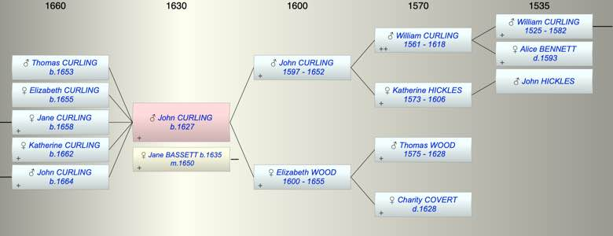

| [Index] |
| John CURLING (1627 - ) |
|  |
| b. 1627 at St Laurence |
| m. 18 Feb 1650 Jane BASSETT (1635 - ) |
| Parents: |
| John (1) CURLING (1597 - 1652) |
| Elizabeth WOOD (1600 - 1655) |
| Siblings (5): |
| William (II) CURLING (1623 - 1660) |
| Anne CURLING (1625 - ) |
| Jane CURLING (1628 - ) |
| Susanna CURLING (1629 - ) |
| Elizabeth CURLING (1630 - ) |
| Children (5): |
| Thomas CURLING (1653 - ) |
| Elizabeth CURLING (1655 - ) |
| Jane CURLING (1658 - ) |
| Katherine CURLING (1662 - ) |
| John CURLING (1664 - ) |
| Events in John CURLING (1627 - )'s life | |||||
| Date | Age | Event | Place | Notes | Src |
| 1627 | John CURLING was born | St Laurence | bap St Laurence 25 Nov 1627 | ||
| 18 Feb 1650 | 23 | Married Jane BASSETT (aged 15) | date of Undenture | ||
| 1652 | 25 | Death of father John (1) CURLING (aged 55) | St Laurence | Note 1 | |
| 1653 | 26 | Birth of son Thomas CURLING | St Laurence | Note 2 | |
| 1655 | 28 | Birth of daughter Elizabeth CURLING | St Laurence | Note 3 | |
| 1655 | 28 | Death of mother Elizabeth WOOD (aged 55) | Note 4 | ||
| 1658 | 31 | Birth of daughter Jane CURLING | St Laurence | Note 5 | |
| 1662 | 35 | Birth of daughter Katherine CURLING | St Laurence | Note 6 | |
| 1664 | 37 | Birth of son John CURLING | St Laurence | Note 7 | |
| Personal Notes: |
|
This might well fit here: 18 Feb 1650. Indenture, being a marriage settlement between John Curling junior, yeoman, of Chilton in St. Laurence, Isle of Thanet, co. Kent and Elizabeth his wife of the one part and George Curling mariner of Ramsgate, in same isle and county concerning an annuity to be paid out of a messuage and land called Chilton in the parish of St. Laurence aforesaid in consideration of a marriage to be had between John son of the said John and Elizabeth and Jane Bassett, daughter of Thomas Bassett, baker, late of Ramsgate, deceased. Signature of John Curling junior. Mark of Elizabeth. Two seals. 30/-
http://www.durtnall.org.uk/DEEDS/Moulton/Kent%20201-300.htm MB writes: Jane Bassett was baptised 4th October 1635 so would have been fifteen at the time of the indenture which fits in with it being a high status match. Poor girls married later at this time - a contrast to later periods when poverty and teenage marriage became linked. Jane Brett was a widow so presumably older and less fertile. That would suggest that most of the children I attributed to Jane in the spreadsheet johnkids.xls should be to Jane Bassett plus also George in 1653, with Thomas in the same year belonging to Jane Brett. Of great interest is George Curling. It would be reasonable to suppose he is John senior's brother, perhaps standing in because John senior is ill. John senior is not listed as a signatory to the indenture. I cannot think of any other reason for another man to be there. In 1638, George Curling, mariner, married Martha Witherden. They died in 1686 and 1682 respectively by which time he was listed as a gentleman. There is only one George Curling known to have been baptised between 1599 and 1630 and that was in 1617 which would fit but he was the son of George and Mary, his father also being a mariner. None of them have any connection with Chilton whatsoever. On the question of who was George in the marriage settlement: George son of Mathew baptised 29 Apr 1599 at St L who might be involved. There are earlier baptisms: George son of Robert bap 25 Oct 1580 at St L and George son of George 21 dec 1589 which could also be the George in the indenture. George Curling, fisherman, who married Mary Michell 1615 at St L and one of their children was George who married Martha Witherden see http://freepages.genealogy.rootsweb.ancestry.com/~mtaylor/p53curlingmichell.htm Will Curlinge John Ramsgate made 1674, probate 1674 PRC/17/73/312a PRC/16/292 C/4Will of John Curling 1674 CCA PRC 16/292 In the name of god Amen upon the thirteenth day of May Anno Dni~ 1674 I John Curling of Ramsgate in the pish of St Larence in the Isle of Thanett and County of Kent Malster being Sicke In body bute Sense and memory god bee praised doe make & ordeyne This my last will and Testamt. In manner and fforme ffollowinge (that is to Saie) ffirste I give And bequeathe to Jone my wife for and duringe the Terme of her natural life All that my Annuity or Rent Charge of Ten pounds a yeare issuing and goinge out of one thirde pte of a Certaine Messuage with the lands and appurten~ces thereunto belonging situate and beinge at or Nigh a certaine place called Chilton in the pish of St Lawrence aforesaid now in the occupac~on of My brother Johne Curlinge Alsoe I give to my said wife for and duringe the Terme of her Natural life All and singular my Cottages Tenements and appurtenc~es whatsoever & wheresoever Alsoe after the decease of my said wife I give and bequeath to my daughter Elizabeth All that my Cottage or Tenemt. And appurtenc~es thereunto belonging now in the occupac~on of Maria [?] ffaireman in Ramsgate aforesaid To bee holde to the said Elizabeth her heires and assignes for ever All that my Cottage or Tenemt and appurtenc~es as it hat beene casually Lette late in the occupac~on of William Goodborne together with the Small Spott of ground at the South Side of the said Cottage and alsoe the useee of a certaine Well nigh adioyninge to the said Cottage Alsoe after the decease of my said wife I give to my daughter Katherine her heires and assignes for ever my Cottage or Tenemt with the Taylors shoppe and appurtenc~es in the occupac~on of Isaacke Eagletone and all waies easements priveledges & advantages to the said Cottage or shoppe belonginge or therewith used occupied and enioyed Alsoe I give to my sonne John Curlinge his heires & assignes for ever All that my aforesaid Annuity or Rent Charge of Ten pounds a yeare hee the said John his heires or assignes paying to my aforesaid daughters Jone [Jane?] and Katherine twenty pounds a peece of lawfull English money within one yeare after the decease of my said wife Alsoe I give and bequeath to my said wife all my household stuffe and all other my goods and Chattells whatsoever and wheresoever And I doe make and ordeyne my said wife my Sole Executrix of this my last will and Testament In Witnesse whereofe I have hereunto putt my hand and Seale Dated the day and yeare first above written’ John Xhis Curlinge Marke Decimo septimo die Octobr 1674 cora~ Readlibiro [?] Thoma Boucside Dre Off~le Ocpdte ine Martino hirst Reg Eio &c Probatum &c iurant~o Joanne Curling relcireri~ Defunct et Exce~ in eod~ testamto nodat Ac na~e apprbat Omisq~ &C Excjcomd… fuit primo ad tca rintlebita Juris ferma iurat salvo iure cum Prinq |
| Created on a Mac™ using iFamily for Mac™ on 8 Oct 2023 |